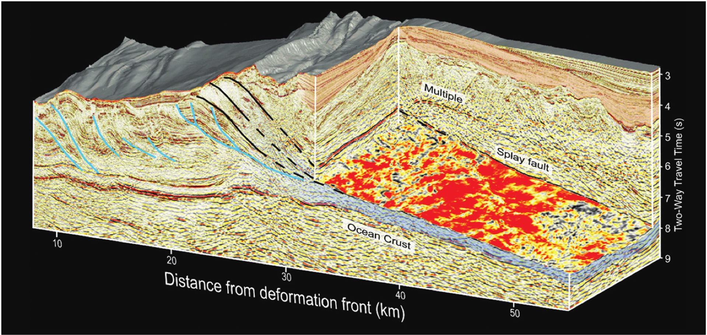
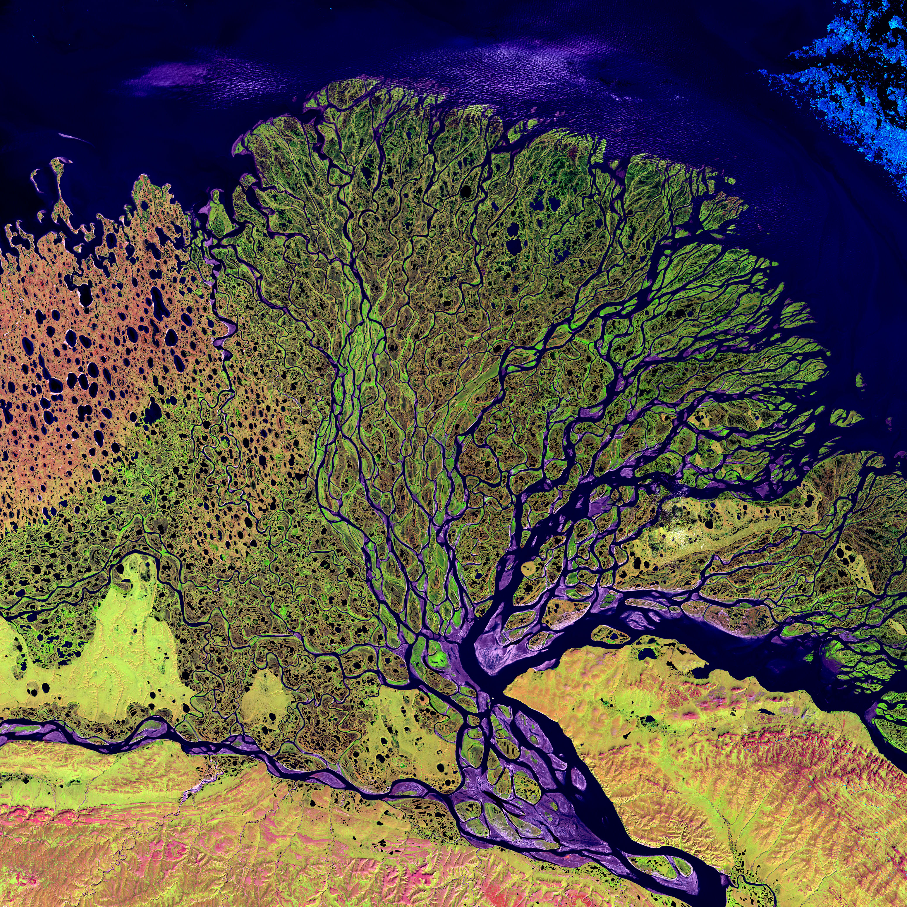
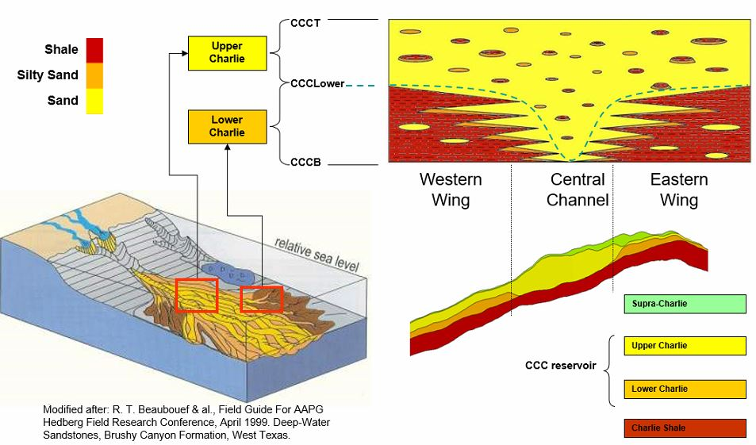
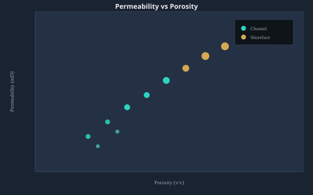
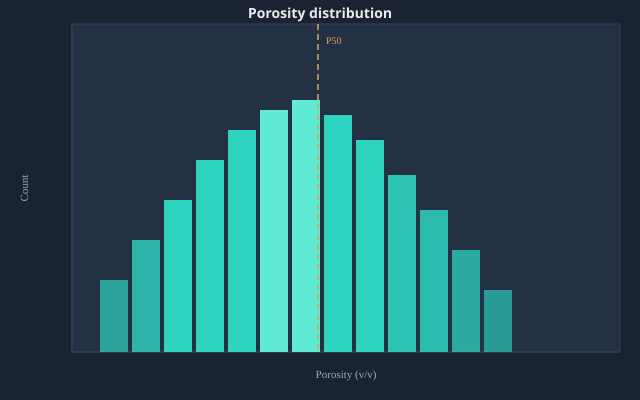
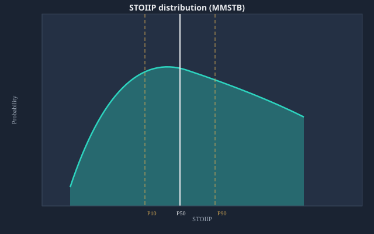

3D seismic · structural geology
Structural framework from seismic
Seismic interpretation and attribute analysis for structure, fault frameworks, and prospect evaluation.
Senior Geoscience Professional
Senior Geologist / Geological Modeler
29+ years in oil and gas — 26 years in reservoir modelling — delivering integrated subsurface solutions across Southeast Asia, the Middle East, Europe, Africa, and South America.

Selected work examples from my CV — not a full skill list. See Skills for tools and capabilities.

3D seismic · structural geology
Seismic interpretation and attribute analysis for structure, fault frameworks, and prospect evaluation.

Conceptual model · sedimentology
Reservoir characterization and geological concepts for static modelling, well correlation, and volumetrics.
I am a motivated and committed Senior Geologist and Geological Modeler with over 29+ years of experience (26 years in modelling) across diverse oil and gas projects in Southeast Asia, the Middle East, Europe, Africa, and South America.
With proven leadership skills, I supervise and mentor junior staff in line with organisational policies and procedures. I bring extensive knowledge of diverse basin types, a sound geological background, and competence in reservoir characterization, seismic attribute analysis, well-log interpretation and correlation. I integrate core, borehole images, conventional logs, and production and pressure data to explain reservoir behaviour — in both development settings and regional play analysis for prospect evaluation.
I conduct systematic, integrated prospect, resource, and asset evaluation to reduce geological uncertainties and risks. I aim to secure challenging roles that deliver quality, timely project outcomes, and I value employers that support professional development and career growth.
Core geoscience, modelling, and data capabilities from decades of global project delivery.
2012 – Present
THREE60 Energy (LEAP Energy Partners)
2011 – 2012
Roxar Sdn. Bhd.
2009 – 2010
Halliburton
2007 – 2009
Petrovietnam Exploration Production Corporation (PVEP)
2006 – 2007
PVEP – Algeria project
1997 – 2006
Petrovietnam Investment and Development Company (PIDC)
Highlights from LEAP Energy, PVEP, Roxar, and Halliburton roles (aligned with CV). Use Show more projects for the full list.
Vietnam · Nam Con Son Basin
Deep-water FDP for deltaic and shoreface stacked sands (Ca Rong Do, Hai Thach, Moc Tinh, Kim Cuong): structure framework, seismically constrained static model, stochastic and deterministic volumetrics, and uncertainty analysis. Regional 3D PSDM interpretation (~1,145 km²) for fault frameworks and Petrel-ready deliverables.
Vietnam · Offshore
Central role in ML-driven fault interpretation over 1,145 km² of 3D seismic — model fine-tuning, integration with legacy data, and refined fault network for digital subsurface imaging.
View AI fault workflow
Oman · PDO · Wafra Field
Three60 / POSEIDON AI-driven study: legacy Petrel repair, Gharif structural framework, sequence-package zonation, facies/properties, fluid contacts, and STOIIP scenarios for mature brownfield development.
View static model study (PDF)
Indonesia · Natuna Sea · Conrad
Integrated 116 km² SW 3D seismic AI with legacy 2D data; Petrel Three60 static model update — GIIP +6% uplift, structure refinement, and AI-guided facies modelling.
View reservoir modeling portfolio
Malaysia · Offshore
Onsite lead for seismic attribute analysis, seismically conditioned reservoir models, dynamic modelling support, and deterministic/probabilistic resource assessment.
View seismic model workflow
Malaysia · PM3 CAA
Behind-casing opportunities for idle/low-producing wells and NAG resource assessment across 200+ stacked reservoirs (coastal marine, channel, delta systems) using probabilistic methods.
Thailand · PTTEP SK-417 / SK-438
Led well correlation, seismic facies analysis, and depositional environment mapping for PTTEP blocks SK-417 and SK-438.
Thailand / Malaysia · PTTEP
Managed structural geology and fault seal studies for SK-417, SK-438, PM-407, and PM-415 using SGR and Allen diagram techniques.
New Zealand
Subsurface data review, static model construction for upper and lower Tariki Sandstone, and resource assessment.
UK · Central North Sea
Facies analysis, geological conceptual model (lower shoreface, channelized systems), structure framework, property modelling, volumetrics, and dynamic model upscaling.
India · Cambay Basin
G&G input, resource assessment, uncertainty analysis, and reference geological model for half-graben channelized Middle Eocene sandstone.
Persian Gulf
G&G input, mega-static model with multiple realizations for two carbonate gas fields, and resource assessment.
Malaysia · Baram Delta
Full field review (150 wells, 300 faults, 200 clastic reservoirs) — geological inputs and reservoir model for Baram B and Baram I (Roxar/Halliburton period).
Vietnam · PVEP
Reinterpreted geology and modelling data; reservoir model update and volumetrics for carbonate and clastic Early Miocene reservoirs; infill well trajectory design from dynamic history match.
Venezuela · Lake Maracaibo
PVEP–PDVSA joint study: geological modelling QC, Halo model and CFM workflow for Cretaceous fractured carbonate reservoirs (Cogollo Group).
Algeria · Sahara
Geological model construction and property modelling for FDP (Hamra sandstone); well correlation, rock typing, fracture studies, deterministic and probabilistic resource estimation, and dynamic upscaling — supporting 13 successful development wells.
Malaysia · North Malay Basin
Key person in charge of data collection, analysis, and geological models for five gas fields in the North Malay Basin; probabilistic resource assessment to capture subsurface uncertainty.
Equatorial Guinea · Block R
Managed FDP (LEAP side) for deep-water independent FLNG in the Niger Delta complex — G&G inputs, seismically constrained static model, resource assessment, and uncertainty analysis.
Malaysia · Central Luconia
Pinnacle Miocene carbonate gas assessment and static model construction using AI seismic as a soft trend for a cluster of gas-bearing buildups offshore Central Luconia.
Australia · Browse Basin
QA/QC and independent verification of legacy structure and petrophysics; framework model with lithofacies, 3D reservoir model, volume computation, and uncertainty analysis.
Malaysia · Offshore
Seismic interpretation and seismically constrained static model for gas-bearing carbonate buildups offshore Central Luconia — volumetrics, uncertainty analysis, and ranking of remaining potential.
Malaysia · Malay Basin
Remaining opportunity identification and MR1–MR2 preparation for a giant mature field (200+ wells): led resource assessment, geological concept review, static model build, and uncertainty analysis.
Iran · Offshore
Seismically constrained static model for Middle Cretaceous carbonate platform reservoirs — in-place resources, key uncertainties, and inputs for dynamic simulation and history matching.
Romania · PHOENIX / OMV-PETROM
Lead geo-modeller: full rebuild of a mature waterflood field (700+ wells, complex structure/stratigraphy) with 200 additional wells and seismic; stochastic realisations for volume uncertainty.
Malaysia · KUFPEC
Validated legacy geological work and RMS model; integrated geophysical, petrophysical, and marker data in Petrel — structure framework and property upscaling.
Australia
Field development planning for Mid Miocene clastic reservoirs (per CV FDP portfolio).
Australia · PAPL
Geological and structural review; Petrel models for ash, moisture, and coal density with stochastic coal-bed methane volumetrics.
Vietnam · Song Hong Basin
Full field review for Mid Miocene clastic reservoirs in the Song Hong Basin.
Malaysia · Baram Delta
EOR screening for coastal marine environment with 70 producing wells — G&G inputs and reservoir model construction.
Malaysia · PM9
Subsurface due diligence and opportunity identification; G&G inputs for resource assessment and validation of existing static models.
Malaysia · Malay Basin
G&G, geophysical, and petrophysical validation; resource estimate and uncertainty analysis for project assessment.
Malaysia · Offshore
Regional geology review, resource estimation, and risk analysis for deep-water block evaluation.
Malaysia
Structure update, property data analysis, resource estimation, and uncertainty analysis.
Malaysia · Sarawak
Managed resource assessment for oil and gas field project offshore Sarawak.
Malaysia
Subsurface due diligence and opportunity identification for marginal field project — lead G&G work.
Malaysia
Subsurface due diligence: well correlation QC, seismic facies, geological concept, resource assessment, and uncertainty.
Indonesia · West Natuna
New venture block review — G&G inputs for block evaluation and resource assessment (Block B West Natuna dataroom).
Malaysia · Sabah
Managed G&G inputs for offshore Sabah block evaluation and resource assessment (Shell assets dataroom).
Malaysia · Talisman
Geomodelling support to the Kinabalu East project (Talisman).
Malaysia · Offshore
Updated geological model, well design, and monitoring of horizontal wells (A2, A1, A1ST, and A3).
Malaysia · Offshore
Reviewed subsurface and re-development opportunity; G&G input and static model reconstruction for oil reservoir and resource assessment.
Australia & New Zealand
High-level screening of Lattice Energy assets and G&G input for block evaluation and resource assessment.
New Zealand
Complex structural model for offshore hydrocarbon field; facies and property model for vertical and lateral variation and volume calculation.
Jinda Project
Reservoir characterization for Teleti and Paterdzeuli fields.
Vietnam · Song Hong Basin
Managed G&G review for Block 103 & 107 — AVO inversion, RMS and AVO envelope and Spec-D attributes to optimise appraisal well location; block evaluation, reservoir assessment, and risk analysis.
Malaysia
Subsurface uncertainty analysis and resource assessment for block evaluation.
International · OMV-PETROM
Geological and geo-modelling assistance for VATA model — field development planning, opportunity identification, and planning support.
India · Assam Valley
Full field review for Dikom, Chabu, and Khaloni Great Field (169 wells, 200 faults, 9 clastic reservoirs).
Malaysia · Sarawak Basin
Led geological team to re-evaluate constructed geological model for SK305 clastic field, offshore Malaysia.
Iraq
Geological team leader for reservoir characterization and geological modelling (2 carbonate and 1 clastic reservoir).
Interactive lab for CSV QC, stochastic volumetrics, and geoscience analytics — built from 28+ years of resource evaluation work.
Monte Carlo volumetrics
Portfolio-hosted stochastic volume calculation app — multi-tank Monte Carlo, P10 / P50 / P90, tornado sensitivity, project save & export.
Open it from tools/stochastic-volume/ on this site; no install required.
.mmra.json project filesDEPLOY-STOCHASTIC.md in the repoLive browser tool
Crossplots, histograms, and deterministic STOIIP in the Data Lab. Full stochastic volume calculation is a separate app (link below). CSV/Excel never leaves your browser in the lab.
tools/stochastic-volume/Illustrative charts from the Data Lab workflow. Replace with your own PNG exports from Petrel, Techlog, or Python in assets/technical/ when ready.



Hanoi University of Mining and Geology
Graduation year not listed on CV — add in this section when available.
Industry training and data-science courses — Doan Hong Thang / Doan Thang.
| Course | Provider | Location | Date |
|---|---|---|---|
| Prospect and Play Assessment | OGCI Training / Oil & Gas Consultants International | Vung Tau, Vietnam | 2–6 Oct 2000 |
| Applied Reservoir Simulation | Schlumberger (NEXT) | Ho Chi Minh City, Vietnam | 14 May 2004 |
| Basin Analysis | Fugro Robertson Training Centre | Vung Tau, Vietnam | 14–18 Nov 2005 |
| Carbonate Reservoir Geology | Fugro Robertson Training Centre | Vung Tau, Vietnam | 21–25 Nov 2005 |
| Geostatistical Reservoir Modeling | Schlumberger (NEXT) | Kuala Lumpur, Malaysia | 28 Apr 2006 |
| Course | Provider | Location | Date |
|---|---|---|---|
| Intermediate Python | DataCamp | Online | 11 Jan 2021 |
| Data Manipulation with pandas | DataCamp | Online | 16 Feb 2021 |
| Introduction to Data Visualization with Matplotlib | DataCamp | Online | 20 Oct 2021 |
| Python Data Science Toolbox (Part 1) | DataCamp | Online | 27 Oct 2021 |
| Python Data Science Toolbox (Part 2) | DataCamp | Online | 22 Nov 2021 |
Best Stochastic Volume Calculation Software Award.
Two successful appraisal wells for Deep Water CRD Talisman Vietnam Project based on static model for complicated structure and varying depositional environments.
Best Geomodel Awards for Algeria and Venezuela Projects.
Employee of the Year (2007 and 2008).
Static model for Algeria project led to 13 successful development wells; Groupement Bir Seba (GBRS) maintained stable production of ~18,000 barrels of oil per day.
View paper
Open to challenging roles in subsurface geoscience and reservoir modelling.